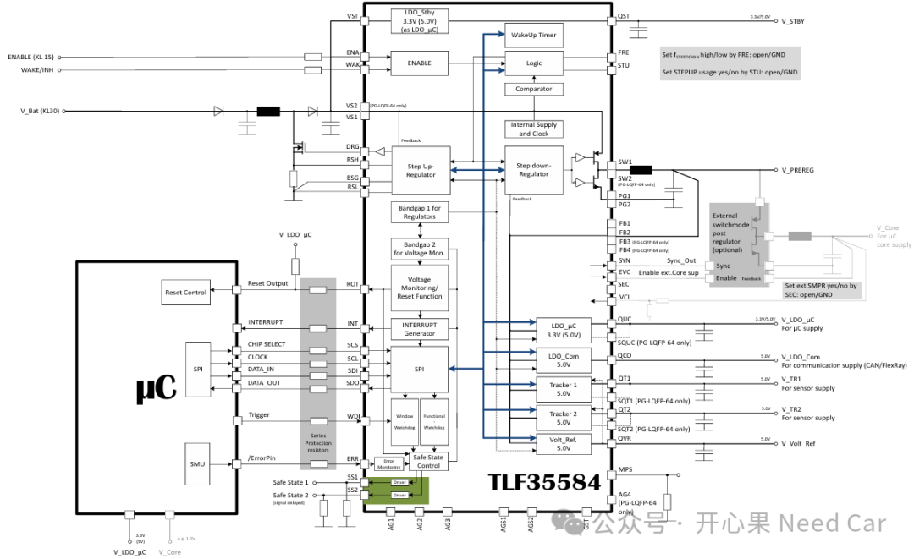
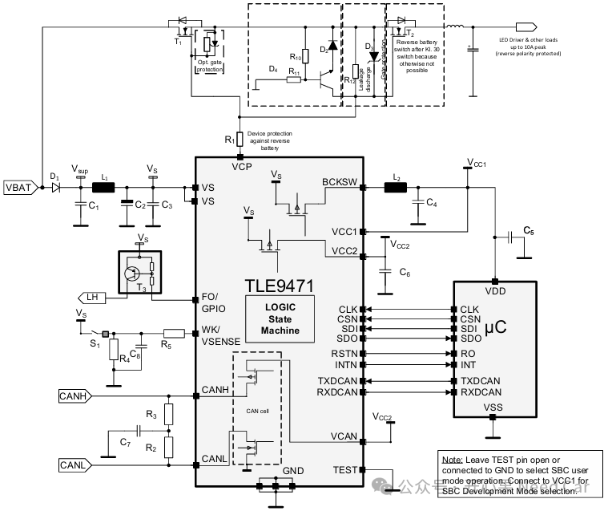

开心果 Need Car · 2026-05-25T06:21:00+08:00 · 微信原文
在现代汽车电子和嵌入式系统中，“PMIC”和“SBC”是两个经常出现但又容易混淆的概念。它们都与电源密切相关，但在功能定位和系统作用上存在明显差异。理解两者的区别，有助于更好地认识电子系统的整体架构。
一、PMIC：专注“供电”的幕后角色
PMIC（Power Management Integrated Circuit，电源管理集成电路）是专门负责电源管理的一类芯片。其核心任务是将输入电源（如汽车电池或外部电源）转换为不同模块所需的稳定电压和电流。
在实际应用中，PMIC通常包含：
DC/DC转换器（降压、升压）
LDO（线性稳压器）
电压监测和保护（过压、欠压）
上电顺序控制（power sequencing）
可以把PMIC理解为一个“电源管家”，它确保系统中各个芯片都能获得安全、稳定、合适的电力供应。例如，在汽车域控制器或高性能MCU（如英飞凌AURIX）中，往往需要多路不同电压，PMIC正是承担这一复杂供电任务的核心器件。
车规高集成 PMIC的芯片包括：TLF35584/TLF35585。以TLF35584(1)为例，典型的应用场景如下所示：

二、SBC：整合“供电+通信+控制”的系统基础芯片
SBC（System Basis Chip，系统基础芯片）是在PMIC基础上进一步高度集成的产品。它不仅具备基本的电源管理能力，还集成了通信接口和系统控制功能。
典型的SBC通常包含三大模块：
1. 电源管理（类似PMIC）
提供LDO或简单DC/DC，为MCU和外围器件供电。
2. 通信接口（核心差异）
集成车载通信收发器，例如：CAN / CAN FD、LIN。这使得SBC可以直接连接汽车网络，无需额外通信芯片。
3. 系统控制功能
包括：
看门狗（Watchdog），防止系统死机
复位控制（Reset）
唤醒管理（Wake-up）
故障保护机制
因此，SBC更像一个“综合管家”，不仅负责供电，还参与整个ECU（电子控制单元）的运行管理。
典型的SBC型号如：TLE9471 / TLE9472，以TLE9471(2)为例，典型的应用场景如下所示：

三、PMIC与SBC的本质区别
从系统角度看，两者的差异可以总结为：PMIC：只负责“电”，SBC：负责“电 + 通信 + 系统管理”。这种差异也决定了它们在系统中的角色不同。
两者区别总结如下：
项目 | PMIC | |
全称 | Power Management Integrated Circuit | System Basis Chip |
核心功能 | 电源管理 | 电源 + 通信 + 系统控制 |
是否包含供电 | ✅ | ✅ |
是否包含通信（CAN/LIN） | ❌ | ✅（核心特征） |
是否带系统管理（看门狗等） | 部分有 | ✅标配 |
是否带系统管理（看门狗等） | CPU/MCU供电 | ECU整个平台基础控制 |
集成度 | 中 |
四、应用场景的选择
在实际工程中，选择PMIC还是SBC，主要取决于系统复杂度和成本需求。
1. 高性能复杂系统（如域控制器）
通常采用：PMIC + 独立通信芯片（如CAN收发器）。原因是：电源需求复杂（多核处理器、多电压域），这样灵活性更高，更容易满足功能安全要求。
2. 中小型ECU（如车身控制模块）
通常采用：SBC一体化方案。例如：车门控制、车灯控制、座椅调节模块。优势是：集成度高，减少外围器件，成本更低，设计更简单。
五、快速判断方法
在工程实践中，可以用一个简单方法区分两者：如果芯片带CAN或LIN接口，基本就是SBC；如果芯片只做电源，多半是PMIC。这条经验在阅读芯片手册或选型时非常实用。
六、总结
随着汽车电子向高集成化和域控制架构发展，PMIC和SBC都扮演着重要角色。PMIC专注于高性能供电，是复杂系统的基础；而SBC则通过高度集成，成为中小型ECU的高效解决方案。
简单来说：PMIC让系统“有电可用”，SBC让系统“能运行、能通信、可管理”。
参考资料：
（1）
https://www.infineon.com/assets/row/public/documents/10/49/infineon-tlf35584-datasheet-en.pdf
（2）
https://www.infineon.com/assets/row/public/documents/10/49/infineon-tle9471-3es-datasheet-en.pdf?fileId=5546d46264fee02f016519df96f8755b
往期精彩回顾